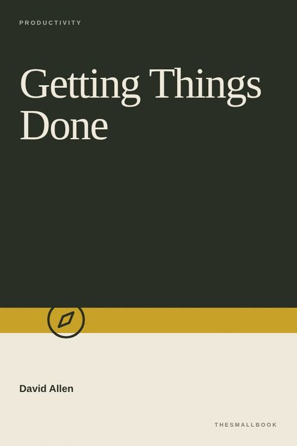

Why Did Constantinople Fail?
The Empire That Fell Through an Unlocked Door
📜 What Happened
Constantinople's triple walls had repelled every siege for a thousand years. During the final Ottoman assault, defenders repulsed wave after wave - until someone noticed Ottoman flags INSIDE the walls. The Kerkoporta, a small sally-gate, had been left unlocked after a night sortie. A handful of soldiers slipped through, panic spread faster than the enemy, and the Roman Empire's last chapter ended - through a door somebody forgot to bolt.
☠️ The Fatal Mistake
A thousand years of wall-strength focus; zero process for checking one small gate under pressure.
🧠 The Lesson (Free for You)
You're only as strong as your most boring checklist. Empires rarely fall to superior force alone - they fall to the small overlooked thing while everyone watches the big obvious thing.
The Antidote Book

Allen's insight, decades ahead of the burnout era: stress doesn't come from having too much to do - it comes from OPEN LOOPS: the hundreds of un-clarified commitments ('mom's birthday... the leaking tap... that email')…
📖 OPEN THE FULL INTERACTIVE BREAKDOWN →Questions people ask about Constantinople
Why did Constantinople fail? A thousand years of wall-strength focus; zero process for checking one small gate under pressure.
How much was lost? A 1,000-year empire
What is the lesson? You're only as strong as your most boring checklist. Empires rarely fall to superior force alone - they fall to the small overlooked thing while everyone watches the big obvious thing.
Constantinople kyun fail hua? In simple English: A thousand years of wall-strength focus; zero process for checking one small gate under pressure. The cost was A 1,000-year empire.
Keep digging
More trust and safety failures · Open the full Graveyard
Read the antidote book summary: Getting Things Done
Related failures
- Why did The City of Troy fail? ~1180 BC · The Original Free Gift
- Why did Juul fail? 2022 · The $38B Vaping Empire That Vaporized to Zero
- Why did Jet Airways fail? 2019 · The Founder Who Couldn't Let Go
- Why did Cambridge Analytica fail? 2018 · Harvested 87 Million Friends of Friends
- Why did Wells Fargo fail? 2016 · 3.5 Million Fake Accounts, Opened by Its Own Staff
- Why did The Post Office Horizon Scandal fail? 2015 · The Computer Was the Only Witness, and It Was Wrong
Questions people ask about Constantinople
Why did Constantinople fail? A thousand years of wall-strength focus; zero process for checking one small gate under pressure.
How much was lost? A 1,000-year empire
What is the lesson? You're only as strong as your most boring checklist. Empires rarely fall to superior force alone - they fall to the small overlooked thing while everyone watches the big obvious thing.
Constantinople kyun fail hua? In simple English: A thousand years of wall-strength focus; zero process for checking one small gate under pressure. The cost was A 1,000-year empire.
Keep digging
More trust and safety failures · Open the full Graveyard
Read the antidote book summary: Getting Things Done
Related failures
- Why did The City of Troy fail? ~1180 BC · The Original Free Gift
- Why did Juul fail? 2022 · The $38B Vaping Empire That Vaporized to Zero
- Why did Jet Airways fail? 2019 · The Founder Who Couldn't Let Go
- Why did Cambridge Analytica fail? 2018 · Harvested 87 Million Friends of Friends
- Why did Grenfell Tower and the Cladding Economy fail? 2017 · The Tower Everyone Was Warned About
- Why did Wells Fargo fail? 2016 · 3.5 Million Fake Accounts, Opened by Its Own Staff
Searchable, filterable, simple to read - they paid billions; you get the lesson.